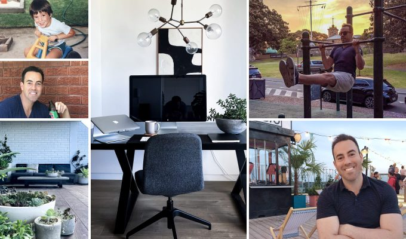
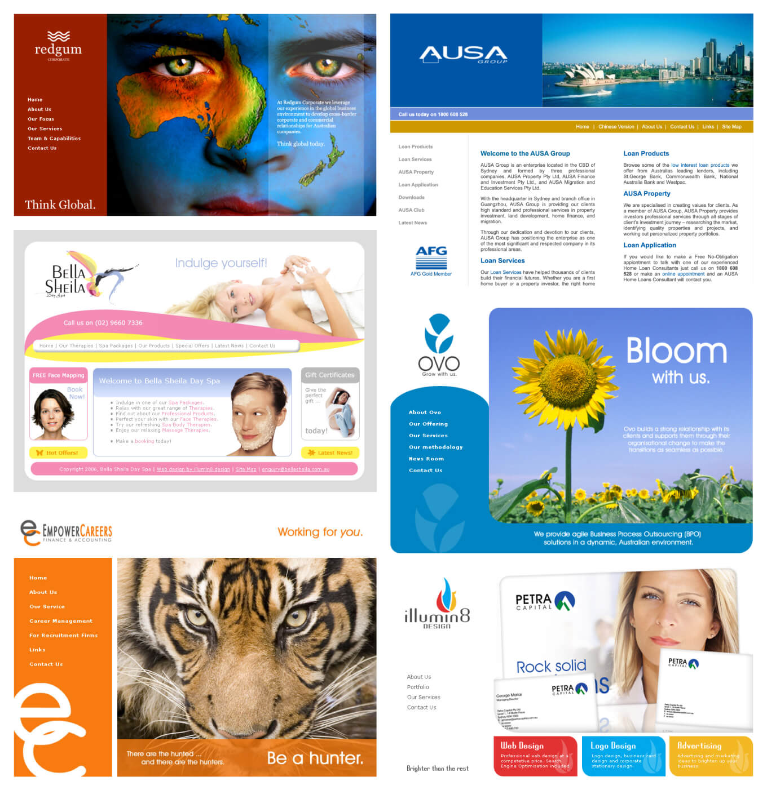
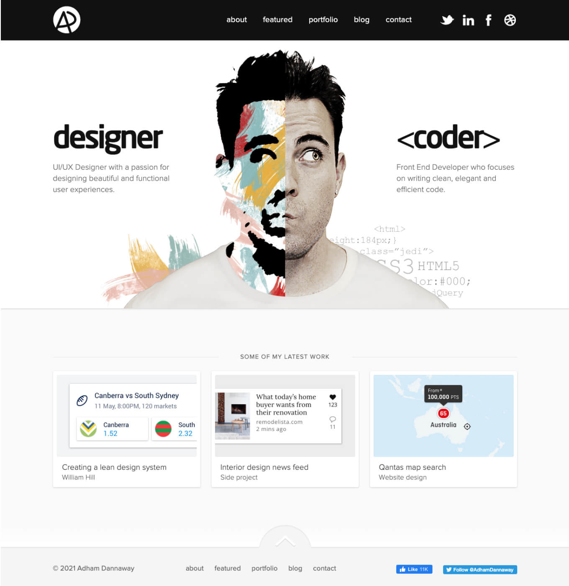

How I became a product designer
My design career journey, key learnings and a bit more about me.
Over the years, a lot of you have asked me about how I got into design and built my career as a product designer. I thought it was about time I wrote it down and shared my story. Don’t worry, I promise I won’t write about myself in the third person. 😉
Here’s what I’ll cover:
Me in a nutshell
I’m a Sydney-based product designer that specialises in UI design and design systems. Since 2005, I’ve worked at a range of startups, agencies, tech companies and corporations. I enjoy the challenge of solving complex customer problems and planning the user experience from the ground up, from research and discovery all the way through to the visual designs.
I’ve been lucky enough to have my work featured in a bunch of books and publications around the world, and I enjoy sharing my knowledge and love of design by tweeting, blogging and speaking at design events (that’s a lie, I actually find public speaking quite scary 😱).
I think it’s important to get regular screen downtime, so when I’m not pushing pixels, you’ll find me working on my pull-ups, tending to my garden and many house plants, cooking up one of my favourite dishes, or hanging out with friends and family.
Quick facts
Home town
Sydney, Australia 🇦🇺 🦘
When I started as a designer
2005 (in my pyjamas from my bedroom in my parent’s house).
Education
Bachelor of Computer Science at UNSW, Master of Digital Media at UNSW, lots of online tutorials, and many years of practice and experimenting.
Specialties
UI design and design systems. They seem to pair well with my love of building things and my OCD nature.
Hobbies
Calisthenics, cooking, travelling, interior design and gardening. Does Netflixing on the couch with Twisties count? 😅
Favourite pastime
BBQ by the water with friends and family with an ice cold beer in hand. 🍺
If I wasn’t a designer
I’d be a builder or an architect, or maybe both?
Favourite quote
“See the extraordinary in the ordinary”.
Recommended online UI/UX design courses
Design Lab, Udemy, Springboard, Udacity (I’m an affiliate for some of these courses, which means that I like them and at no additional cost to you, I may make a small commission if you purchase via my link).
Recommended books
My UI design book, UI design books, UX design books
How I got into design
Since I was a kid, I’ve always loved art, craft, drawing and making things. While I found creative ventures fun, I only ever pictured myself doing a regular ‘stable’ office job at a big company, because that’s what adults do right? At the end of high school I had absolutely no idea what I wanted to do, or even what was out there, so I just followed a few of my friends into computer science at UNSW.
University was tough, my friends and I spent most of our time stuck in the computer labs rushing to get our seemingly never ending list of assignments done on time. The computer labs were eerily dark and quiet, with the smell of stale corn chips looming in the freezing cold air conditioned air. Luckily, someone always sent around a secret link to Quake 3 which made it bearable. Programming was cool, but I knew that something was missing.
Once I’d graduated, I was lucky enough to score an IT internship at a big company. I jumped around different areas of the IT department, until one day I landed in the website design team. I loved the combination of digital art and programming and I was instantly hooked. From that point on, I started building and experimenting with all sorts of different websites. They weren’t great at first, as seen in some of the relics below from 2005, but I used every project to land more clients, build my portfolio and gain further experience.

After my internship, I decided to study a Masters of Digital Media at UNSW to further my skills, and freelanced on the side to pay the bills. Looking back, I probably didn’t need my university degrees to be a designer. Then again, there weren’t as many online UX design tutorials and courses back then. Come to think of it, “UX design” wasn’t even a thing yet!
After finishing my masters, I had a pretty decent amount of work under my belt which helped me get my first job at a small marketing company. I recommend working at small companies when you’re first starting out, as you’ll really get your hands dirty on a variety of work.
My first job was going really well, but sadly after 2 years, the company went under and made everyone redundant. It was tough, but when life gives you lemons, you make a portfolio website. I locked myself in my room for nearly a month. My goal was to create a unique portfolio website that would put me on the map as a designer. No mean feat, I knuckled down for days on end until I finally came up with an idea I didn’t hate.
The concept was to split a photo of my face in half to symbolise my split design and development skill set. I created a personal brand and website around this concept (seen below) that luckily went viral amongst the design community. That same design has stood the test of time, and remains unchanged over a decade later (although I think it’s probably time to blow off the cobwebs). So getting made redundant was actually a blessing in disguise.

With my shiny new portfolio website in hand, I went on to work at start-ups, tech companies, agencies and corporations, absorbing as much knowledge and skills as I could. Along the way, I also built a social media following by sharing design tips, news and inspiration, which helped reinforce my brand.
I’m currently a product designer doing contract work and enjoy the variety and freedom that this style of work provides. There’s always a new problem to solve, and I’m glad to still be making things, just like I was when I was a kid.
Key things I’ve learned
Here are a few key takeaways I’ve learned over my years as a designer. They’ve come in handy for me, hopefully they’ll come in handy for you too.
Less is more
Design can be a subjective and creative art form, but it’s also logical and scientific. While I like to craft beautiful products, I also believe that every detail of your product or UI should have a specific purpose and should earn its place. Less is definitely more when it comes to design. Start with a blank canvas and add only what’s needed.
Let’s take website typography as an example: Start with simple black text on a white background as a base. Headings are made larger or bolder to create hierarchy. Links are coloured blue and underlined to show that they’re clickable. Adding layers of detail purposefully in this way will ensure that you end up with a user-friendly and beautiful product. It will also mean that you’re able to articulate the reasons behind your design decisions, which is what good design is all about.
Keep learning and challenging yourself
In any profession, it’s easy to stagnate and get comfortable. It’s important for me to read and absorb as much as I can to stay passionate about my craft and to continue to challenge myself and those around me. I try to set aside some time each morning to read and learn something new. Here are some of my favourite newsletters I enjoy reading with my morning tea:
Market yourself and share the love
From early on in my career, I started building my brand and sharing design news, tips, resources and inspiration. Not only does having a strong brand help me get clients and jobs, it also helps give me a voice and an audience to share my love of design with. You can get some good freebies too, so I’d definitely recommend creating a memorable brand profile and building it up over time. Here’s how I created my brand and website back in the day.
Don’t use a cannon to kill a mosquito
While I believe that user research and usability testing are critical components to building a good product, I also think that designers need to trust their gut more and have their own vision. I’ve found that many designers these days seem to have become slaves to usability testing and user research, throwing hundreds of different UX techniques at relatively simple problems. Do we really need a competitor analysis, a contextual enquiry, a survey, user interviews, a heuristic review, a user journey diagram and a SWOT analysis just to change the colour of a button?
We’re trying to kill mosquitos with cannons and spending a lot of time and money doing so. If we use tried and tested design patterns, we can cut down our UX process to become more lean, efficient, cost-effective problem solvers.
Done is better than perfect
If you’re like me, you’re probably a stickler for detail. This can however eat up valuable time and money, so I’ve learned that it’s usually better to get a product out there as soon as you can, learn from it and improve it over time. This isn’t an excuse to create crap, but more of a reminder that perfectionism can actually get in the way of designing a great product.
If you’ve made it this far, I hope you’ve learned a little bit more about me and my journey as a designer. If you’ve got any questions or want to stay in touch, please follow me on Twitter for design tips, news, tools and inspiration.